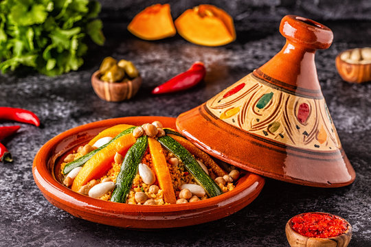

Tajine

Experience the taste of the orient
Experience the rich and aromatic flavors of Tajine, a traditional North African dish named after the earthenware pot in which it is cooked. Slow-cooked to perfection, this dish features tender meats, vegetables, and a blend of spices like cumin, coriander, and saffron. Tajine offers a delightful and hearty meal, perfect for sharing and savoring the taste of Moroccan cuisine.
What you will need:
- Meat (Chicken, lamb or beef)
- Carros
- Onions
- Dried aprictos or prunes
- Tajine spice blend (cumin, coriander, ginger, cinnamon, saffron)
- Prepare the ingredients: Cut the meat into chunks and chop the onions and carrots. Soak the dried apricots or prunes in warm water for a few minutes to soften.
- Saute the Aromatics: In a tajine pot or heavy-bottomed pot, heat some olive oil over medium heat. Add the chopped onions and cook until they are soft and translucent.
- Add the meat and the spices: Add the meat to the pot and brown it on all sides. Sprinkle the tajine spice blend (cumin, coriander, ginger, cinnamon, saffron) over the meat and stir to coat evenly.
- Add Vegetables and Fruits: Add the chopped carrots and the soaked dried apricots or prunes to the pot. Pour in enough water or broth to cover the ingredients, then cover the pot with a lid.
- Simmer and Server: Reduce the heat to low and let the tajine simmer for about 1.5 to 2 hours, or until the meat is tender and the flavors are well combined. Serve hot, garnished with fresh herbs if desired.